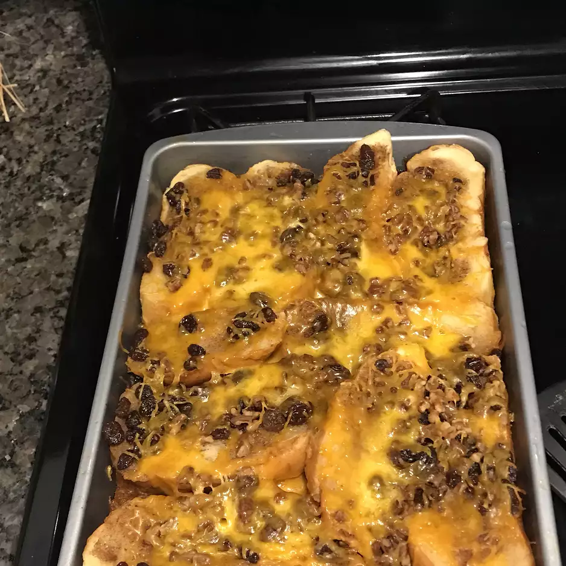

Mexican Capirotoda

Description
This is a traditional Mexican bread pudding served during Lent.
It is commonly made with piloncillo (Mexican brown sugar).
Ingredients
- 3 cups water
- 3 cups brown sugar, divided
- 2 cinnamon sticks
- 2 cups butter, softened
- 2 loaves sliced white bread, toasted
- 1/4 teaspoon ground cinnamon, or to taste
- 1/4 teaspoon ground nutmeg, or to taste
- 1/8 teaspoon ground cloves, or to taste
- 2 cups raisins
- 2 cups peanuts
- 1 pound shredded sharp cheddar cheese